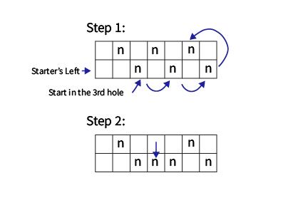
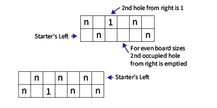
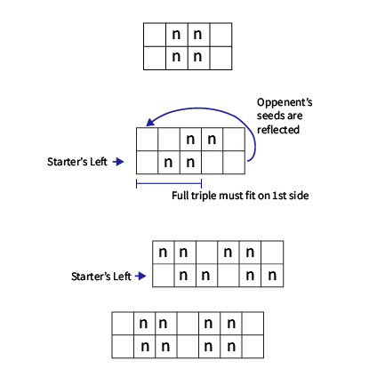
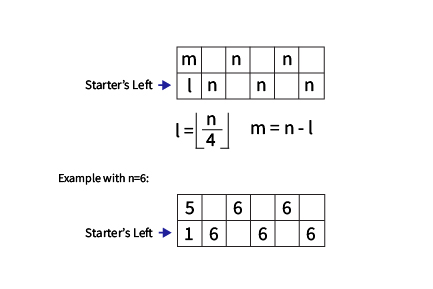

Mancala Game Parameters
Game options are provided in the following categories (presented on corresponding tabs on the Mancala Game Editor):
- Game: Provide high level information about a game: name, description, size, setup, etc.
- Dynamics: Parameters that provide some high level of control over how game play is conducted and control which holes moves may be started from.
- Sow: Parameters that control how the seeds are sown (moved around) in the sow phase of a turn including the child parameters.
- Capture: Parameters that control where seeds are captured from and any special mechanisms for multiple captures.
- Variants: Parameters that define available named variants and individually adjustable parameters.
- Tags: A collection of additional top level tags in the game dictionary.
- Player: Selection of the AI player and parameters that control how it selects moves (see AI Player).
An alphabetical parameter index is included after the parameter sections.
Each parameter description includes:
- Location in Config File to describe where the parameter is defined in a Game Description file. The _all_params.txt file shows all game options and their default values.
- Type of the parameter with a link to the Parameter Types help.
- The default value for the parameter. If the default value is to be used the key-value pair is not needed in the game description file. Note that Mancala Game Editor has slightly different defaults to yield a playable game.
- The Mancala Game Editor tab on which the parameter can be set.
Game Tab
Game Class
Location in Config Files: game_class
Type: GameClasses
Default value: Mancala
UI Tab: Game
The name of the Game Class. One of:
-
Mancala
Allows setting all parameters.
Some combinations of parameters are not implemented (NotImplementedError generated) or prohibited (GameInfoError reported). Other combinations are not recommended and either generate an actual warning (UserWarning) or a 'gentle warning' (a print to the console--if there is one).
Most preconfigured games use this class.
-
NorthSouthCycle
A two-cycle game class in which each player only sows on their own side of the board. If NO_SIDES is configured, either player may sow on either side of the board, but the seeds will remain on that side of the board.
Players may effect eachother's play with CROSSCAPT, PICKEXTRA, Qur CHILD_TYPE, and others.
Weg children are only supported for no_sides games. Prohibited options include: GOAL of Territory; MUSTSHARE; some SOW_RULE; some CHILD_RULE; and MLAP_CONT of OPP_SIDE, OWN_SIDE and VISIT_OPP are prohibited.
NS_Kalah is a preconfigured game using this class.
-
EastWestCycle
A two-cycle game class in which player's control east and west sides of the board, and seeds are sown in those cycles.
EWGratuitous is built on this class. Without specialized extension of this game class, it appears to only support race type games, e.g. who can clear their holes faster. Their is little or no player interaction supported in the Mancala Games engine.
-
BearOff
A flexible game class that does Backgammon-like bear off board clearing after the game reaches a state where only singletons are left. When a sow reaches the player's end of the board, any remaining seeds in hand are removed from play (actually moved to their store).
This is intendend for clear and deprive games, though this is not enforced. It turns the end game into a race to see which player accomplishes the goal first.
The transition from normal sow to bear-off sowing is made on the first move when all of the seeds on the board are singletons (i.e., all holes <=1 seeds). Games may ended via an outright win before this condition is achieved.
Even if a future moves starts with > 1 seeds in a hole, the normal sow is not resumed.
NO_SIDES is not supported and MIN_MOVE must be 1. There are no other limitations unique to the BearOff game class.
Andada is a preconfigured game using this class.
-
Diffusion (also a game)
A game class with has a unique sow method and win condition. Players control the east/west sides of the board.
The game is basically preconfigured, only the board size can be changed to any even size. Game goal must be CLEAR.
-
DiffusionV2
Like
Diffusion but players control the typical north/south sides of the board. Used as a game variant in the game Diffusion. - NSGratuitous
A game class in which seeds are only sown on the player's own side of the board. If a capture is made, the capturer chooses one of their opponent's holes to put the seeds into. All seeds go into exactly one hole.
The game goal must be CLEAR. Stores maybe included but they are only used to show whose turn it is. Sow direction is unconstrained. PLAY_LOCS, MOVEUNLOCK, SOW_STORES, SOW_RULE, MLAP_CONT, CAPT_RTURN, and PICKEXTRA are not supported with this game class. Capture mechanisms must be limited to your own holes: basic captures, next, and two out.
The example game SameSide uses this game class.
- EWGratuitous
Like the NSGratuitous game class but the board is divided east/west instead of north/south.
Restrictions from NSGratuitous apply to EWGratuitous.
Ohojichi is a preconfigured game using this class.
- ShareOne
A game class that forces a share of one seed when your opponent does not have any seeds at the start of your turn. You may choose which hole the seed comes from but it must be a hole with at least two seeds. After sharing the one seed, the sharer gets a repeat turn.
The following options are prohibited: BLOCKS, MUSTSHARE, NO_SIDES, or any repeat turn option (CAPT_RTURN, SOW_OWN_STORE, XC_SOWN or GRANDSLAM of LEGAL_SHARE). The game GOAL must not be TERRITORY.
ZigZag A flexible game class with a unique zigzag sowing pattern. See the ZigZag game help for details of the pattern and it's creators.
The sowing is done in a zigzag fashion: Sowing is done towards the center line of the board. The first hole sown is one hole towards the center and on the opposite side of the board, when the end of the board is reached sow directly across from the last hole. The sow pattern cycles through each hole of the board before visiting a hole a second time.
Games with min_move of 1, no user directed sow direction holes, and an even number of holes, will not allow a player to move a single seed that was just moved across the center of the board back across the board. This restriction only applies to the very next turn.
SOW_DIRECT must be TOCENTER. If the size of the board is odd, the center hole must be in the User Chooses Direction list. There are no other limitations unique to the
ZigZag game class. - NSGratuitous
Holes per Side
Location in Config Files: game_constants : holes
Type: int
Required Parameter
UI Tab: Game
Number of holes on each side of the board. Values of 2 to 21 are supported.
Help File
Location in Config Files: game_info : help_file
Type: str
Default value:
UI Tab: Game
A secondary help file providing additional game details over the 'About' text. It is included as a link in the Mancala Game Configurations html file.
About
Location in Config Files: game_info : about
Type: multi_str
Default value:
UI Tab: Game
A description of the game, typically enough to remind the player what the game options are.
New lines can be inserted with \n.
Game Name
Location in Config Files: game_info : name
Type: str
Default value: Mancala
UI Tab: Game
The game name which may have spaces. Used for the window title and the filename (with spaces replaced with underscores).
Start Seeds
Location in Config Files: game_constants : nbr_start
Type: int
Required Parameter
UI Tab: Game
The number of seeds in each hole at the start of a game when START_PATTERN is ALL_EQUAL. For the RANDOM start pattern, this is the total number of seeds to be placed. Other sow patterns use this as the number of seeds for some holes in the associated patterns.
Dynamics Tab
Game Goal
Location in Config Files: game_info : goal
Type: Goal
Default value: 0
UI Tab: Dynamics
The overall goal of the game. Defines how a player wins.
Goals that start with RND_ are 'round tally games'. Multiple games are played and the overall winner is determined by the tally type (see the options below).
-
MAX_SEEDS: The goal is to collect the maximum number of seeds.
If the game is not played in rounds, the game will end when one player has more than half of the total seeds.
If the game is played in rounds, the round end condition is decided by ROUNDS. These games end when one player has collected sufficient seeds to prevent the opponent from filling the required number of holes. Generally, the required number of holes is one, but this may be increased by setting goal_param.
In MAX_SEEDS/ROUNDS games the player only controls the holes on their side of the board, while, in TERRITORY games a player may control holes on either side of the board.
-
DEPRIVE: eliminate all your opponent's seeds. If a player has no seeds at the start of their turn, they lose. If the current player doesn't have any seeds at the end of their turn, they lose.
GRANDSLAM must be legal for deprive games.
Deprive games can be played in tallied rounds--no other support for rounds is provided. Use a goal of RND_WIN_COUNT_DEP. ROUNDS must be NO_MOVES, ROUND_FILL is ignored, and goal_param should be set to the number of round wins required for a game win. For example, a "best of 7 games" would have goal_param of 4.
Deprive games cannot use children and the following options are prohibited: MOVEUNLOCK, MUSTPASS and MUSTSHARE.
-
TERRITORY: claim ownership of holes by collecting more seeds than your opponent. Claiming ownership of goal_param holes wins the game.
Territory games are generally played in rounds. A winner is declared for each round based on the condition set in ROUNDS.
After each round, the ownership of holes is decided by the number of seeds captured in the previous round. The winner's collected seeds are used to fill as many holes as they can with NBR_START seeds, first on their own side of the board and then their opponent's side. Next, if they have more than half the seeds required to fill another hole, ownership of one more hole is allocated to them. The remaining holes are allocated to the round loser.
This ownership of holes only applies to the next round played; ownership of holes varies with each round played. Hole ownership may be reclaimed or lost each round.
The Ownership Arrows Display option may be used to show hole ownership with long thin arrows in each hole. The arrows point up for the top/north player and down for the bottom/south player. If facing players is set, the arrows point towards the hole owner.
A move maybe started from any hole owned by a player, no matter the side of the board--with any restrictions based on game rules. Captures are determined by CAPT_SIDE and hole ownership--not by side of the board. For example, if a player may only capture from their opponent's holes (per game rules), but their opponent owns a hole on their side of the board; its seeds may be captured by that player.
In territory games, all holes are available for play each round, though the ALLOW_RULE or MUSTSHARE may limit which holes may be played on any given turn.
In a territory game without rounds, the winner is not declared until one player has enough seeds to claim goal_param holes.
Territory games require STORES and that GOAL_PARAM be set to a value between the number of holes and two times the number of holes.
Territory games are incompatible with NO_SIDES, GRANDSLAM of NOT_LEGAL, ALLOW_RULE of OPP_OR_EMPTY. Territory games may only use a ROUND_FILL of NOT_APPLICABLE or UCHOWN.
-
CLEAR: clear seeds from your own holes.
If a player has seeds, moves must always be possible so MIN_MOVE must be 1 and ALLOW_RULE of single_to_zero, single_all_to_zero, not_xfrom_1s and occupied may not be used.
GRANDSLAM must be legal for clear games.
Clear games can be played in tallied rounds--no other support for rounds is provided. Use a goal of RND_WIN_COUNT_CLR. ROUNDS must be NO_MOVES, ROUND_FILL is ignored, and goal_param should be set to the number of round wins required for a game win.
Clear games cannot use children and the following options are prohibited: MOVEUNLOCK, MUSTPASS and MUSTSHARE.
- RND_WIN_COUNT_MAX: win goal_param rounds of MAX_SEEDS games. ROUND_FILL is not used; each round is setup as the start of the game.
- RND_SEED_COUNT: collect goal_param seeds across several rounds. ROUND_FILL is not used; each round is setup as the start of the game.
- RND_EXTRA_SEEDS: collect goal_param extra seeds (winner - loser seeds). ROUND_FILL is not used; each round is setup as the start of the game.
- RND_POINTS: score goal_param points. WIN is 1 point. WIN and skunk (> 3/4 of total seeds) is 2 points. ROUND_FILL is not used; each round is setup as the start of the game.
- RND_WIN_COUNT_CLR: win goal_param rounds of CLEAR games. ROUND_FILL is not used; each round is setup as the start of the game.
- RND_WIN_COUNT_DEP: win goal_param rounds of DEPRIVE games. ROUND_FILL is not used; each round is setup as the start of the game.
-
IMMOBILIZE: prevent your opponent from having a valid move at the start of their turn.
This is subtly different than deprive in two ways. First, the game will not end until the current player does not have a valid move. Second, the last mover wins the game even if they do not have any seeds.
Immobilize games cannot use children or repeat turns. GRANDSLAM must be legal. The following options are prohibited: MOVEUNLOCK, MUSTPASS and MUSTSHARE.
Immobilize games can be played in tallied rounds--no other support for rounds is provided. Use a goal of RND_WIN_COUNT_IMB. ROUNDS must be NO_MOVES, ROUND_FILL is ignored, and goal_param should be set to the number of round wins required for a game win.
- RND_WIN_COUNT_IMB: win goal_param rounds of IMMOBILIZE games. ROUND_FILL is not used; each round is setup as the start of the game.
Goal Parameter
Location in Config Files: game_info : goal_param
Type: int
Default value: 0
UI Tab: Dynamics
GOAL of Territory: defines the number of holes needed for a win. The number of holes for each player are computed by rounding the number of seeds collected divided by the number of start seeds per hole.
Goal of Max Seeds and ROUNDS: defines the minimum number of holes each player must have to continue the game. The player with fewer seeds must have enough seeds to fill goal_param holes each with start_seeds to continue playing. There is no rounding of seed counts as in territory games.
RND_* Goals: number of specified parameter for win.
Start Pattern
Location in Config Files: game_info : start_pattern
Type: StartPattern
Default value: 0
UI Tab: Dynamics
Allows specifying non-all-equal start patterns.
For TERRITORY games played in round, The following patterns are supported:
The gamacha fill pattern is only supported for boards with 3 or more holes per side. The total seeds in plays is (holes - 1) x nbr_start.

The total number of seeds in play is holes x nbr_start.
The alts_with_1 fill pattern is only supported for boards with 3 or more holes per side. The total seeds in play is (holes - 1) x nbr_start + 1 if holes is odd and (holes - 2) x nbr_start + 1 if holes is even.

The clippedtriples fill pattern is only supported for boards 3 or more holes per side. The total seeds in plays is floor(holes / 3) x nbr_start x 4.

The twoempty fill pattern is only supported for boards with 4 or more holes per side. The total seeds in play is 2 x (holes - 2) x nbr_start.
The alts_split fill pattern is only supported for boards with an even number of holes per side. The total seeds in play is holes x nbr_start.

Both sides of the board are setup the same, so the second player will only have a repeat turn if the starter's opening move gave them one.
In broad strokes, an extra seed is placed in the hole whose sow would have landed in the store; this seed is taken from a hole such that sowing from it will reach one past the store. The actual computations vary based on board size and number of start seeds but the resulting start pattern will not allow a repeat turn for the starter.
The seed placement is not adjusted if there is no repeat turn possible with an ALL_EQUAL pattern.
In the formulas above holes (n in figures) is the game constant HOLES and nbr_start is the game constant NBR_START.
When a game is played in ROUNDS, start_pattern is only supported for round tally (RND_*) and territory GOAL games and only for ROUND_FILL of NOT_APPLICABLE and UCHOWN.
Location in Config Files: game_info : prescribed
Type: SowPrescribed
Default value: 0
UI Tab: Dynamics
The first sow of the game maybe defined by a specific rule. Prescribed openings are different than start patterns because the player may choose the sow start point. SOW_STORES and SOW_RULE are ignored during the prescribed openings.
Location in Config Files: game_info : min_move
Type: int
Default value: 1
UI Tab: Dynamics
The minimum number of seeds a hole must have for it to be an allowable move start hole.
Location in Config Files: game_info : allow_rule
Type: AllowRule
Default value: 0
UI Tab: Dynamics
Allow rules limit the holes from which moves may start. Disallowed holes are not selectable.
Location in Config Files: game_info : play_locs
Type: PlayLocs
Default value: 0
UI Tab: Dynamics
Locations in which moves may start:
Location in Config Files: game_info : end_cond
Type: EndGameCond
Default value: 0
UI Tab: Dynamics
Conditions that end the game. If the game is ended, UNCLAIMED defines what happens with any seeds left on the board and GOAL is used to determine the winner.
All other game ending conditions still apply, e.g., the game will end as soon as one player has more than half the seeds in a MAX_SEEDS game.
If the game is played in rounds, this condition will end a round unless the game win conditions are met.
Location in Config Files: game_info : end_param
Type: int
Default value: 0
UI Tab: Dynamics
Parameter for END_COND.
Location in Config Files: game_info : unclaimed
Type: EndGameSeeds
Default value: 0
UI Tab: Dynamics
Defines how to score any unclaimed seeds when a game has ended. Unclaimed seeds are those not in children or stores when a game ends without a clear winner: no outcome change possible, current player cannot share, etc.
This parameter is not used for clear, unclaimed or immobilize games. For other games, this parameter defines how the Concede Round and Concede Game menu commands work.
If a Concede/End Round/Game menu command is used to end the game, the unclaimed seeds are handled with the QUITTER configuration.
Location in Config Files: game_info : quitter
Type: EndGameSeeds
Default value: 4
UI Tab: Dynamics
Defines how to score any unclaimed seeds when a player ends the round or game using an End Round or End Game menu command.
This parameter is not used for clear, deprive or immobilize games.
The allowable values are the same as for UNCLAIMED (EndGameSeeds) except UNFED_PLAYER is disallowed. Location in Config Files: game_info : stores
Type: bool
Default value: False
UI default value: True
UI Tab: Dynamics
True when stores are present on the game board. For games with GOAL of DEPRIVE or CLEAR, stores can be used to show whose turn it is (seed counts will not be sown).
Location in Config Files: game_info : no_sides
Type: bool
Default value: False
UI Tab: Dynamics
Moves maybe made from any hole, independent of the side of the board.
Care must be taken when using The test for CAPT_SIDE might not behave as expected for games that are not north/south; that is, some games not built on the Mancala game class. Specifically, the board side ranges are used for the test, so if they are patched, the test might not be a north or south test, but still might be what you want. A gentle warning (console print) is raised.
Location in Config Files: game_info : mustpass
Type: bool
Default value: False
UI Tab: Dynamics
When a player has no allowable moves on their turn, they must pass and continue to do so until they have allowable moves, or the game is over. The game is over when there is a clear winner or tie condition, or when neither player has an allowable move.
Location in Config Files: game_info : mustshare
Type: bool
Default value: False
UI Tab: Dynamics
If an opponent has no moves at the start of your turn, you must make seeds available to them, if you can.
This condition is enforced by only activating holes in the UI which will make seeds available to the opponent. If used with UDIR_HOLES, grids are used to show which direction cannot be sown.
Location in Config Files: game_info : grandslam
Type: GrandSlam
Default value: 0
UI Tab: Dynamics
A grandslam is when your opponent has seeds at the start of your turn, and you capture them all with one move. This option selects what to do:
Grandslam must be legal to use UDIR_HOLES.
Location in Config Files: game_info : rounds
Type: Rounds
Default value: 0
UI Tab: Dynamics
When rounds are employed, each round may end under conditions that do not win the overall game. The board is then setup again per the game rules, generally with some feature changed based on the previous round: hole ownership, holes out of play, a shortened board. Play continues in rounds until either player meets the overall game winning condition.
If the game is played in rounds, it defines how each round ends:
For example: In Weg, each round ends when neither player has a valid move. The board is then set up again after determining who owns what territory (holes). Rounds continue until one player has claimed sufficient territory to be declared the game winner (e.g., ownership of 10 or more holes).
In the case of a round win or tie a new starter is determined via ROUND_STARTER and the board is reset according to ROUND_FILL.
BLOCKS are used in many games and set between rounds based on the seed placement. TERRITORY GOAL games adjust hole ownership between rounds.
Location in Config Files: game_info : round_starter
Type: RoundStarter
Default value: 0
UI Tab: Dynamics
Defines which player starts 2nd and subsequent rounds:
Location in Config Files: game_info : round_fill
Type: RoundFill
Default value: 0
UI Tab: Dynamics
The round fill method determines which holes are filled and how many seeds they are filled with when setting up for a new round.
Several round fill mechanisms use the same general approach called the Empty Hole Method. The loser of the previous round will end up with empty holes. These holes are not playable if BLOCKS are used; otherwise, they are playable. This method is not used for RND_* GOAL games.
The seeds each player accumulated in the previous round are distributed into holes with exactly the same number in each (NBR_START seeds). The winner will fill all their holes and put any remaining seeds into their own store. The loser will fill as many holes as they can with nbr_start seeds and put any remaining seeds (fewer than nbr_start) into their own store.
LEFT_FILL, RIGHT_FILL and OUTSIDE_FILL define which holes that the loser must fill. UCHOOSE allows the loser to choose which holes have seeds.
The winner's side of the board is left unchanged: seeds left as is, blocks left in place, and seeds in the store remain. If the winner's side of the board is not playable, a new game is started.
NO_SIDES, children and locks are not supported. UNCLAIMED and QUITTER must both be HOLE_OWNER.
Location in Config Files: game_info : blocks
Type: bool
Default value: False
UI Tab: Dynamics
Blocks remove holes from play and are shown on the UI with an X.
When used with ROUNDS, the holes not filled from the player with fewer seeds are blocked and thus out of play for the round.
When used with DEPRIVE, SOW_BLCK_DIV and goal_param holes are closed (blocked and removed from play) when sown to goal_param seeds.
Location in Config Files: game_info : mlaps
Type: LapSower
Default value: 0
UI Tab: Sow
Determines if seeds from more than the initial start hole are picked up and sown:
In general, sowing laps continues in this manner until the final seed of a lap reaches an empty hole. Other conditions for ending lap sowing are listed below.
Several values of SOW_RULE perform an operation after each lap sown: SOW_BLKD_DIV(_NR) closes the final hole and CHANGE_DIR_LAP changes the direction of sowing after each lap.
Sowing continues until the hole after the lap's final seed is empty. Other conditions for ending lap sowing are listed below.
A SOW_RULE of CHANGE_DIR_LAP changes the direction of sowing after each lap. SOW_BLKD_DIV(_NR) is not supported for LAPPER_NEXT.
Multilap sowing is stopped for: a repeat turn, making a child, a capture, or a reason specified by MLAP_CONT.
Multilap games may get stuck in seemingly endless sowing loops. If more than 75 laps are sown, the computer will end the game using the same mechanism as the menu command End Game based on GOAL and UNCLAIMED.
Location in Config Files: game_info : sow_direct
Type: Direct
Default value: 1
UI Tab: Sow
Direction of sow:
Games with min_move of 1 and with end holes whose sow direction cannot be user selected, will not allow a player to move a single seed that was just moved across the board sides back across the board. This restriction only applies to the very next turn.
Both mouse buttons will start a move no matter the sow direction. If the hole is marked as UDIR_HOLES, the button selects sow direction. On the other hand, if the hole is not marked as UDIR_HOLES, either button will sow in the prescribed direction. This can be a useful mechanism to remind yourself that on SPLIT sow, the left holes go CW by using the left button and the right holes go CCW by using the right button.
When PLAYALTDIR is not selected, any hole can be set as UDIR_HOLES to allow the user to override the sow_direct setting.
Location in Config Files: game_info : udir_holes
Type: list[bool]
Default value: None
UI Tab: Sow
A list of holes from which the user can choose the sow direction. Control is via the mouse button: left is clockwise, and right is counter-clockwise.
Note: all holes respond to both mouse buttons, but if the hole is not in udir_holes, the sow direction will be that prescribed by sow_direct with either button.
Games with any hole set to user chooses direction must have GRANDSLAM be LEGAL and only ALLOW_RULE s that do not depend on sow direction are supported.
Location in Config Files: game_info : sow_start
Type: bool
Default value: False
UI Tab: Sow
When selected, the first seed is sown into (i.e., left in) the start hole.
Location in Config Files: game_info : skip_start
Type: bool
Default value: False
UI Tab: Sow
When sowing a second or subsequent circuit of the board, skip the start hole. This will leave the start hole empty for single lap games.
In multilap games, the start hole for the current lap is skipped. Second or subsequent laps may sow into the original start hole.
Location in Config Files: game_info : move_one
Type: bool
Default value: False
UI Tab: Sow
Only valid when SOW_START is set. Changes the SOW_START behavior so that if there is only one seed in the hole, it is moved in the sow direction by one hole.
Location in Config Files: game_info : sow_stores
Type: SowStores
Default value: 0
UI Tab: Sow
Determines if seeds should be sown into stores.
The specfic option selects if there is a repeat turn or not when the final seed of a sow lands in a store. A repeat turn will occur instead of a possible capture.
When used with lap sowing (MLAPS), a repeat turn will occur instead of continuing the lap sowing.
Location in Config Files: game_info : presowcapt
Type: PreSowCapt
Default value: 0
UI Tab: Sow
Capture type that occurs before sowing:
Location in Config Files: game_info : sow_rule
Type: SowRule
Default value: 0
UI Tab: Sow
Special sow rules add additional behavior or restrictions to the sowing phase:
When sowing, blocked holes on your own side of the board are skipped and blocked holes on opponent's side are diverted out of play or captured.
Game GOAL must be DEPRIVE and all the associated restrictions apply. NOCAPTMOVES maybe used to prevent closing holes on the initial games moves. Capture mechanisms other than closing holes are not supported. The minimum move must be 1 and thus SOW_START is incompatible. ALLOW_RULE may not be used to limit allowable moves. SKIP_START is not supported with SOW_BLKD_DIV. MLAPS of LAPPER_NEXT is not supported with SOW_BLKD_DIV(_NR).
The capture is done by the hole owner, so the non-sower may capture seeds while their opponent sows. If the game GOAL is TERRITORY the capturer is the hole owner; otherwise each player captures from their own side of the board no matter who is sowing.
If MLAPS is LAPPER and the final seed sown for any lap meets the simple capture criteria for that hole, the contents of the hole are captured by the sower and not the hole owner and the turn is over. For CAPTTWOOUT, CAPT_NEXT and CROSSCAPT captures, the sower always does the final capture.
GRANDSLAM rules are not applied. NOCAPTMOVES prevents this capture for the first moves.
If mlaps is LAPPER and the final seed sown for any lap meets the capture criteria, the contents of the hole are captured by the sower and not the hole owner and the turn is over.
GRANDSLAM rules are not applied. NOCAPTMOVES prevents this capture for the first number of specified moves.
If a basic capture is configured (EVENS, CAPT_ON, CAPT_MAX or CAPT_MIN), check for capture. It there is a capture, the hole after the captured seeds is drawn to continue lapping.
If CROSSCAPT is configured and the last seed is sown into empty hole, check for cross capture. If there is a capture, continue sowing with the single seed.
If the CAPT_TYPE is NEXT or TWO_OUT and the last seed of a lap ends in an occupied hole, do a possible capture. Then, continue lap sowing even if there is no capture.
For all LAP_CAPT rules, if stores are not configured, sowing will be stopped when the opponent does not have seeds.
For all LAP_CAPT rules, if stores are not configured, sowing will be stopped when the opponent does not have seeds.
Not compatible with basic captures. Behaves badly with most capt_types unless other options are used to prevent endless sows. Turn on Disallow Endless Sows via the Game menu for experimentation.
Location in Config Files: game_info : sow_param
Type: int
Default value: 0
UI Tab: Sow
A general parameter for sowing. Usage is based on other sow options:
Sow rule of SOW_BLKD_DIV or SOW_BLKD_DIV_NR: defines the number of seeds needed to close/block holes.
Sow rule of MAX_SOW: maximum number of seeds a hole may contain
Sow rule of NO_SOW_OPP_NS: don't sow opposite holes with sow_param seeds
Sow rule of OPP_GETS_OWN_LAST: number of seeds to switch from straight LAP_CAPT sowing to opponent capturing seeds sown on their side of the board, unless final seed does capture
Location in Config Files: game_info : mlap_cont
Type: SowLapCont
Default value: 0
UI Tab: Sow
An additional limit on continuing MLAPS sowing:
Location in Config Files: game_info : mlap_param
Type: int
Default value: 0
UI Tab: Sow
Parameter for the Lap Continue Reason.
Location in Config Files: game_info : child_type
Type: ChildType
Default value: 0
UI Tab: Sow
For all child_types other than RAMs: games with children allow players to claim holes. These child holes are an extension of the stores and seeds in them count towards a win. Making a child stops any multilap sowing, moves cannot start from children, and they cannot be captured (except for special rules associated with WEGs). Children may be created as allowed by both CHILD_LOCS and CHILD_RULE.
Used to create tuzdik style children along with CHILD_RULE of OPP_ONLY and CHILD_LOCS of NOT_SYM_OPP.
Location in Config Files: game_info : child_cvt
Type: int
Default value: 0
UI Tab: Sow
Defines the number of seeds required to make a child.
Location in Config Files: game_info : child_rule
Type: ChildRule
Default value: 0
UI Tab: Sow
Additional child creation requirements may be set. These are in addition to location restrictions specified by CHILD_LOCS. If the CHILD_TYPE allows making more than one child, the child_rule is applied to hole in which the final seed was sown; the second hole does not need to meet the criteria.
Location in Config Files: game_info : child_locs
Type: ChildLocs
Default value: 0
UI Tab: Sow
Locations where children can be made by each player. Child locations are further limited by CHILD_RULE.
Some pattern are specified below with 5 designators per side as: a b c d e These are applied as: a is used for the first hole (left most), b the second, d the second last, and e the last (rightmost), c is replicated for all interior holes.
The allowable children are designated by: T - top/north player, B - bottom/south player. N - neither player.
For shorter boards, the pattern is generated using assignments (a b c d e) as:
board length 2: a e
board length 3: a c e
board length 4: a b d e
For boards longer than 5, the middle specifier is duplicated as needed:
board length >= 5: a b c c c ... c d e
TB N N N TB
TB N N N TB
N TB TB TB N
N TB TB TB N
B T T T B
T B B B T
Used for Walda type children: Each player may create up to 6 walda: on either end of each side of the board and the next two outer holes on their own side of the board. Note that there are only 8 total places that walda maybe created.
TB B N B TB
TB T N T TB
B TB TB TB TB
TB TB TB TB T
TB TB TB TB T
B TB TB TB TB
T TB TB TB TB
TB TB TB TB B
9 8 7 6 5 4 3 2 1
1 2 3 4 5 6 7 8 9
TB B B B TB + TB T T T TB
Location in Config Files: game_info : evens
Type: bool
Default value: False
UI default value: True
UI Tab: Capture
Capture when a hole has an even number of seeds, greater than 0. When selected with other basic capture mechanisms, the capture mechanisms are ANDed (all must be true for capture). Basic capture mechanisms are: CAPT_MAX, CAPT_MIN, CAPT_ON and EVENS with restrictions from OPPSIDECAPT, MOVEUNLOCK and not child holes of any type.
MLAPS LAPPER sowing will stop the sowing on a final seed that would capture based on the selected basic capture mechanisms.
Either SOW_RULE of OWN_SOW_CAPT_ALL or SOW_SOW_CAPT_ALL includes the basic capture mechanisms.
Location in Config Files: game_info : capt_max
Type: int
Default value: 0
UI Tab: Capture
Capture when the contents of the hole are less than or equal to capt_max. Disable with 0 value.
When selected with other basic capture mechanisms, the capture mechanisms are ANDed (all must be true for capture). Basic capture mechanisms are: CAPT_MAX, CAPT_MIN, CAPT_ON and EVENS with restrictions from OPPSIDECAPT, MOVEUNLOCK and not child holes of any type.
MLAPS LAPPER sowing will stop the sowing on a final seed that would capture based on the selected basic capture mechanisms.
Either SOW_RULE of OWN_SOW_CAPT_ALL or SOW_SOW_CAPT_ALL includes the basic capture mechanisms.
Location in Config Files: game_info : capt_min
Type: int
Default value: 0
UI Tab: Capture
Capture when the contents of the hole are greater than or equal to capt_min. Disable with 0 value.
When selected with other basic capture mechanisms, the capture mechanisms are ANDed (all must be true for capture). Basic capture mechanisms are: CAPT_MAX, CAPT_MIN, CAPT_ON and EVENS with restrictions from OPPSIDECAPT, MOVEUNLOCK and not child holes of any type.
MLAP LAPPER sowing will stop sowing on a final seed that would capture based on the selected basic capture mechanisms.
Either SOW_RULE of OWN_SOW_CAPT_ALL or SOW_SOW_CAPT_ALL includes the basic capture mechanisms.
Location in Config Files: game_info : capt_on
Type: list[bool]
Default value: None
UI Tab: Capture
Capture when the contents of the hole are in the capt_on list. The Mancala Games UI only has checkboxes for 1 to 5 seeds, but any number may be put into the configuration file.
When selected with other basic capture mechanisms, the capture mechanisms are ANDed (all must be true for capture). Basic capture mechanisms are: CAPT_MAX, CAPT_MIN, CAPT_ON and EVENS with restrictions from OPPSIDECAPT, MOVEUNLOCK and not child holes of any type.
MLAP LAPPER sowing will stop sowing on a final seed that would capture based on the selected basic capture mechanisms.
Either SOWRULE of OWN_SOW_CAPT_ALL or SOW_SOW_CAPT_ALL includes the basic capture mechanisms.
Location in Config Files: game_info : crosscapt
Type: XCaptType
Default value: 0
UI Tab: Capture
Capture seeds across the board from the final seed sown. The capture of those seeds can be limited by CAPT_MAX, CAPT_MIN, CAPT_ON, EVENS, MOVEUNLOCK, and/or CAPT_SIDE. For example, crosscapt with evens will only capture when there are an even number of seeds in the opposite hole.
SOW_RULE of SOW_CAPT_ALL does not do this capture.
Location in Config Files: game_info : xcpickown
Type: CrossCaptOwn
Default value: 0
UI Tab: Capture
When crosscapt is set, it defines what to do with the single seed initiating the cross capture.
Location in Config Files: game_info : xc_sown
Type: bool
Default value: False
UI Tab: Capture
Only allow cross capture if the player has sown onto the opposite side of board.
If a player ends on their own side of the board in an empty hole, but did not sow any opposite hole, they get a repeat turn.
Location in Config Files: game_info : capt_type
Type: CaptType
Default value: 0
UI Tab: Capture
Capture type.
When not lap sowing, basic capture rules are applied and capture side is checked on the hole from which the seeds will be captured.
When multiple lap sowing, the basic capture rules define when the multilap sowing will end. When the final seed of a lap meets the basic capture criteria, multilap sowing ends and the seeds in the next hole (defined by CAPT_DIR setting) are captured.
CAPT_DIR must be SOW. Basic capture rules and capture side are ignored (if a "capture while sowing" SOW_RULE is selected, these are applied to sowing).
When not lap sowing, the final hole sown must be occupied for capture two out (i.e. contains two or more seeds after sowing).
Multilap sowing does not stop to check for two out captures on each lap*. For LAPPER sow, captures are checked after the final seed ends lands in an empty hole. For LAPPER_NEXT sow, captures captures are checked when there are no seeds in the hole after the final seed sown.
*The SOW_RULE LAP_CAPT is supported for TWO_OUT captures with LAPPER sow.
If multiple captures are configured, captures continue while the pattern of empty hole followed by an occupied hole repeats.
Location in Config Files: game_info : multicapt
Type: int
Default value: 0
UI Tab: Capture
An int to describe possible multicaptures:
0 no multiple captures.
-1: After the initial capture, continue capturing as long as the capture conditions are met. This multiple capture may happen in the sow direction (unsown holes); in the opposite direction (sown holes); or in both directions as selected with CAPT_DIR.
1 .. holes: if See individual capture mechanism for any unique requirements.
Location in Config Files: game_info : capt_dir
Type: CaptDir
Default value: 0
UI Tab: Capture
Determines the direction of captures when there are multiple captures. CAPT_TYPE of NEXT and TWO_OUT require Location in Config Files: game_info : nocaptmoves
Type: int
Default value: 0
UI Tab: Capture
Don't allow captures or closing of holes (SOW_RULE of SOW_BLKD_DIV) for the first specified number of moves of the game or round.
Location in Config Files: game_info : capt_side
Type: CaptSide
Default value: 0
UI Tab: Capture
Limits where captures maybe made. For cross capture, these apply to the location being captured, and not the final hole sown.
Location in Config Files: game_info : nosinglecapt
Type: bool
Default value: False
UI Tab: Capture
If the selected start hole has exactly one seed, no capture may be made with it.
Location in Config Files: game_info : moveunlock
Type: bool
Default value: False
UI Tab: Capture
Holes in the game start each game and round locked. Captures may not be made from locked holes. Starting a sow from a hole unlocks it allowing future captures.
Location in Config Files: game_info : capt_rturn
Type: CaptRTurn
Default value: 0
UI Tab: Capture
Controls repeat turn on captures. Making children is not a capture.
Location in Config Files: game_info : pickextra
Type: CaptExtraPick
Default value: 0
UI Tab: Capture
Rules to allow taking of more than otherwise captured or picked seeds:
In terms of GRANDSLAM, these picks are considered captures.
Location in Config Files: : variants
Type: TextDict
UI Tab: Variants
Provide a dictionary in JSON format of named variants whose values are the parameters to set for that variant. The first name of the variant must match the game name and must have an empty dictionary.
JSON (JavaScript Object Notation) format is explained here: https://www.json.org/json-en.html.
The following value would define a base game of Krur and a named variant of Location in Config Files: : vari_params
Type: TextDict
UI Tab: Variants
Provide a dictionary in JSON format where the keys are paramters (options) and the associated values are a list valid values for each. If all values are to be allowed any non-list type can be provided; "include" or "all" are suggested.
JSON (JavaScript Object Notation) format is explained here: https://www.json.org/json-en.html.
The following value would allow changing of three parameters: selection of board sizes 3 to 6; mustpass as true or false; and capturing in the sow direction or the opposite of the sow direction (but not sowing in both directions):
Location in Config Files: : extra_tops
Type: multi_str
UI Tab: Tags
The On Save, the tags are copied back to the top level. White space is stripped off the right side of values, and any that are still multi-line will be saved to the text_section. Any value can be forced to be stored in the text_section by including <txt>.
Extra tags may be included in a game configuration file. Generally included tags are listed below. The script play_mancala allows filtering the game list by many of these values on the About tab.
An example of extra_tags:
Location in Config Files: player : algorithm
Type: Algorithm
Default value: minimaxer
UI Tab: Player
The algorithm value is the name of the AI player algorithm (a string):
minimaxer: an Alpha-Beta Pruning MiniMaxer
negamaxer: minimaxer with a very minor optimization for alternating turn games (no repeat turns). Uses minimaxer depths for difficulties.
montecarlo_ts: a Monte Carlo Tree Search player.
Location in Config Files: player : difficulty
Type: int
Default value: 1
UI Tab: Player
The default difficulty for the game. Valid values are 0 for easiest and 3 for hardest. The difficulty can be changed at play time, even during game play, in the Mancala UI.
Location in Config Files: player : ai_active
Type: bool
Default value: False
UI Tab: Player
Automatically activate the AI player. The AI player can be manually deactivated, but it is selected for the starter it will start the game.
Location in Config Files: player : ai_params : mcts_bias
Type: list[int]
Default value: [200, 200, 300, 300]
UI default value: [300, 200, 100, 100]
UI Tab: Player
Bias for the Monte Carlo Tree search algorithm for each difficulty level (0-3). A larger bias encourages game tree exploration but defocuses the exploration from the best choices. This is critical in avoiding getting stuck in sub-optimal move choices.
Value is divided by 1000.
Location in Config Files: player : ai_params : mcts_nodes
Type: list[int]
Default value: [800, 1000, 1200, 1400]
UI default value: [100, 300, 500, 800]
UI Tab: Player
Number of game tree expansions to perform each time we pick a new move. One value for each difficulty level (0-3).
Location in Config Files: player : ai_params : mcts_pouts
Type: list[int]
Default value: [1, 1, 2, 2]
UI default value: [1, 1, 1, 1]
UI Tab: Player
Number of end games played out from each expanded node. One value for each difficulty level (0-3).
Location in Config Files: player : ai_params : mm_depth
Type: list[int]
Default value: [1, 1, 3, 5]
UI Tab: Player
The depth that the minimaxer or negamaxer will search the game tree from the current node. One value for each difficulty.
Location in Config Files: player : scorer : mx_stores_m
Type: int
Default value: 0
UI default value: 4
UI Tab: Player
The multiplier for the stores scorer. Seeds in stores and children are included.
The stores scorer may not be used in games without STORES or CHILDREN. A zero multiplier disables the stores scorer.
Used only for minimax & negamax players.
Location in Config Files: player : scorer : mx_access_m
Type: int
Default value: 0
UI Tab: Player
The multiplier for the access scorer. The access scorer computes how many of the opponent's holes can be accessed for the given game state.
The access scorer is slow and therefore is prohibited from being used in multilap games (MLAPS); games with user choice of move direction (UDIR_HOLES); and games where hole owners are not predefined (NO_SIDES). In these game configurations, the multiplier must be zero to disable the access scorer.
Used only for minimax & negamax players.
Location in Config Files: player : scorer : mx_seeds_m
Type: int
Default value: 0
UI Tab: Player
The multiplier for the seeds scorer. The seeds scorer computes how many seeds each player has on the game board that are not in children.
Used only for minimax & negamax players.
Location in Config Files: player : scorer : mx_empties_m
Type: int
Default value: 0
UI Tab: Player
The multiplier for the empties scorer. The empties scorer counts the number empty holes each player has on the board.
Used only for minimax & negamax players.
Location in Config Files: player : scorer : mx_child_cnt_m
Type: int
Default value: 0
UI Tab: Player
The multiplier for the child scorer. The child scorer counts the number children each player has.
The child scorer may only be used on games with children. If the game does not include children, the multiplier must be zero.
Used only for the minimax & negamax players.
Location in Config Files: player : scorer : mx_evens_m
Type: int
Default value: 0
UI Tab: Player
The multiplier for the even scorer. The even scorer counts the number of holes with an even number of seeds. This is useful to use when the capture mechanism is evens.
Used only for minimax & negamax players.
Location in Config Files: player : scorer : mx_rturn_a
Type: int
Default value: 0
UI Tab: Player
A value used to encourage or discourage repeat turns. The value is added in for the current player and subtracted off the score for the opposing playing. Use a positive value to encourage the AI player to repeat turns.
This parameter may only be used for games in which repeated turns are possible (SOW_STORES, CAPT_RTURN or XC_SOWN).
Used only for minimax & negamax players.
Location in Config Files: player : scorer : mx_easy_rand_a
Type: int
Default value: 0
UI Tab: Player
If the game is being played on easy mode (game difficult of easy/0), a random value may be added to the static evaluation. This can be done to induce errors into the ai player's game play. A random value is selected between -mx_easy_rand_a and +easy_rand.
The specific value for this should be selected based on the ranges of the parameters and multipliers.
Used only for minimax & negamax players.
Prescribed Opening Move
Minimum Seeds for Move
Special Move Restrictions
Play Locations
End Game Condition
End Cond Param
Unclaimed Seeds at End
Quit Game Seeds
Stores
No Sides
Must Pass
Must Share
Grand Slam
Rounds
Round Starter
Round Fill Method
Blocks
Sow Tab
Sow Type
Sow Direction
User Chooses Direction
Sow Start Hole
Skip Start on Cycle
Move One Seed
Sow Store
Pre Sow Capture
Special Sow Rules
Sow Parameter
Lap Continue Reason
Lap Continue Param
Type of Children
Child Convert Count
Child Restrictions
Child Locations
Capture Tab
Capture Evens
Capture Max
Capture Min
Capture On Values
Cross-Capture
Own Seed on Xcapture
Must sow opp for xcapt
Capture Type
Multiple Captures
Capture Direction
Nbr Start Moves w/o Capture
Capture side
No Single Seed Capture
Move Unlock for Capture
Repeat Turn on Capture
On Capture, Take More Rule
Variants Tab
Named Variants
{
"Krur": { },
"Rounds": {
"rounds": 2,
"blocks": true,
"round_starter": 0,
"round_fill": 1
}
}
Vari Params
{
"holes": [ 3, 4, 5, 6 ],
"mustpass": "include",
"capt_dir": [ 0, 1 ]
}
Tags Tab
Additional Top Level Tags
<rules>
Russ, Laurence. Mancala Games. 1984. p33.
<deviation>
Round tally goal is used so that the round loser can start each new game.
In play without rounds, the starter always alternates.
<origin>
traditional
<region>
Eastern Africa
Player Tab
Algorithm
Default Difficulty
Start Active
MCTS Bias
MCTS Nodes per Move
MCTS Playouts per Node
MiniMaxer Depth
Stores (captured) Multiplier
Access Multiplier
Seeds Multiplier
Empties Multiplier
Child Count Multiplier
Evens Multiplier
Repeat Turn Addin
Easy Random Addin
Parameter Index